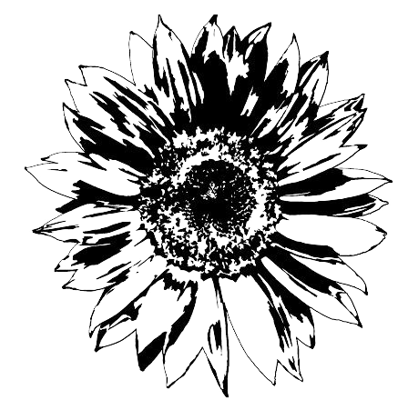
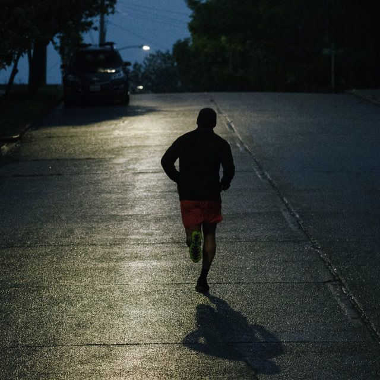

Jogging
jogging is like a place of healing for me. On weekends I usually jogging alone in the morning, apart from keeping my body healthy, jogging also makes me forget about all my college assignments and existing problems.
Music
Whatever activity I do there must be background music. Listening to music other than as entertainment. Listening to music has a positive effect on my mental and emotional health. Listening to music also makes me escape from the noise of the world

Movies
Watching films can be a way for me to relax for a moment from my daily routine. Many films have themes about life, love, friendship and courage. From this film we can learn many valuable lessons in life that can shape our thoughts and attitudes towards life.